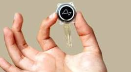
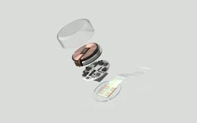

El Dispositivo
El dispositivo de Neuralink, es un implante cerebral que permite la comunicación directa entre el cerebro y dispositivos externos como el ordenador o el movil con la mente. Tiene el tamaño de una moneda y se implanta en el craneo. Tiene una gran cantidad de cables que envian la informacion del cerebro a los dispositivos permitiendo tambien controlar un brazo robotico o recuperar la capacidad de ver

Beneficios
- Enre sus beneficios destacaan:
- 1.Ayuda a personas con paralisis: permitiendoles controlar dispositivos electronicos con la mente.
- 2.Tratamiento de enfermedades neurologicas: gracias a estimular partes especificas del cerebro puede ser la solucion a enfermedades como el parkingson.
- 3.Interaccion directa con la tecnología: permitiendo facilitar nuestra forma de interactuar con esta:

Evolución
- Inicios (2016-2019)
- Neuralink se fundó en 2016 para desarrollar interfaces cerebro-computadora (BCI) que permitieran la comunicación directa entre el cerebro y los dispositivos electrónicos.
- En 2019, Neuralink lanzó su primer prototipo, un dispositivo con electrodos ultrafinos que pueden implantarse en el cerebro para monitorizar y estimular la actividad neuronal.
- Experimentación con animales y avances tecnológicos (2020-2022)
- En 2020, Neuralink hizo una demostración de una cerda llamada Gertrude con un chip implantado que podía registrar su actividad cerebral en tiempo real.
- En 2021, Neuralink publicó un vídeo de un mono jugando a un videojuego utilizando únicamente sus pensamientos, lo que demuestra la capacidad del dispositivo para interpretar señales cerebrales complejas.
- Aprobaciones de la FDA y primeros ensayos en humanos (2023-2024)
- En 2023, Neuralink recibió la aprobación de la Administración de Medicamentos y Alimentos de EE. UU. (FDA) para comenzar ensayos clínicos en humanos.
- En 2024, Neuralink anunció el éxito de su primer implante en un ser humano,permitiendole utilizar el cursor en una pantalla y utilizar aplicaciones.

Relación con la IPO
Neuralink es una tecnología que tiene mucho potencial para mejorar la vida del ser humano gracias a la tecnología, el paciente operado en 2024 solo es el principio. Es una tecnología capaz de permitir a la gente solventar sus discapacidades fisicas.
.jpeg)